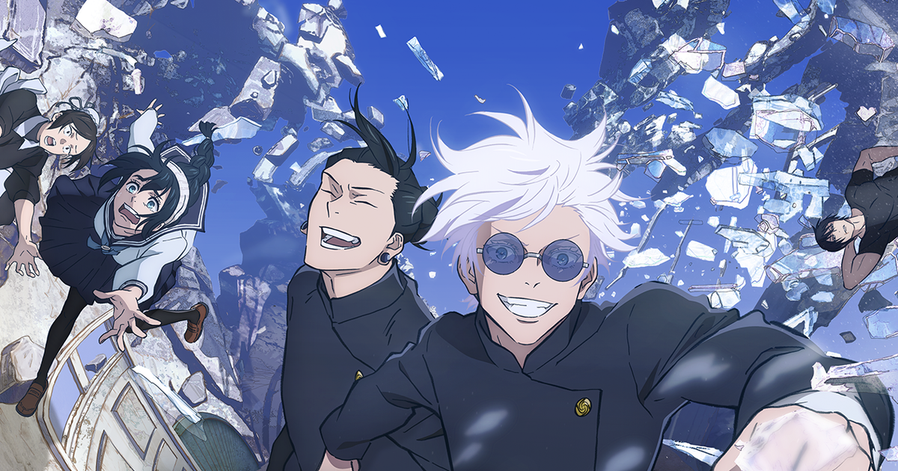
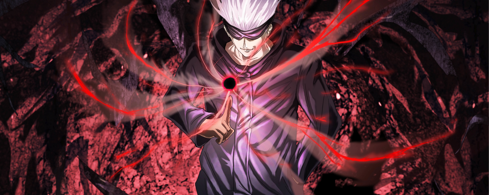
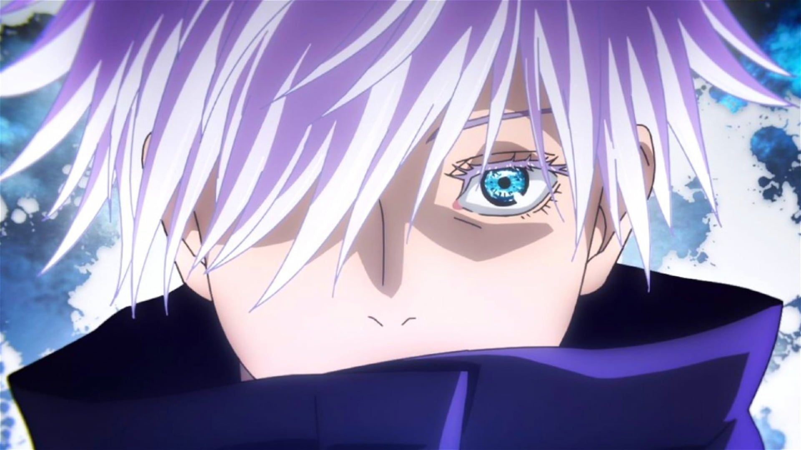

Six Eyes「 六 りく 眼 がん , "Seis Olhos"」é um raro jujutsu ocular herdado da família Gojo. Ele concede ao usuário uma percepção extraordinária e a capacidade de utilizar o Limitless em seu potencial máximo.
quem é Satoru Gojo ?
Satoru Gojo é um personagem fictício que aparece no mangá e anime japonês "Jujutsu Kaisen", criado por Gege Akutami. "Jujutsu Kaisen" é uma série de ação e sobrenatural que gira em torno de feitiçaria, maldições e artes marciais. Satoru Gojo é um dos personagens principais da história.
Gojo é um professor na Escola Técnica de Jujutsu de Tóquio, onde ele ensina técnicas de combate contra maldições. Ele é considerado um dos feiticeiros mais poderosos no mundo fictício de "Jujutsu Kaisen" e é conhecido por sua força e habilidades excepcionais. Gojo também desempenha um papel crucial na proteção dos personagens principais da série, Yuji Itadori, Megumi Fushiguro e Nobara Kugisaki, contra ameaças de maldições.
Satoru Gojo é um personagem fictício que aparece no mangá e anime japonês "Jujutsu Kaisen", criado por Gege Akutami. "Jujutsu Kaisen" é uma série de ação e sobrenatural que gira em torno de feitiçaria, maldições e artes marciais. Satoru Gojo é um dos personagens principais da história.Gojo é um professor na Escola Técnica de Jujutsu de Tóquio, onde ele ensina técnicas de combate contra maldições. Ele é considerado um dos feiticeiros mais poderosos no mundo fictício de "Jujutsu Kaisen" e é conhecido por sua força e habilidades excepcionais. Gojo também desempenha um papel crucial na proteção dos personagens principais da série, Yuji Itadori, Megumi Fushiguro e Nobara Kugisaki, contra ameaças de maldições.Além de suas habilidades de combate, Satoru Gojo é conhecido por sua personalidade única, sendo muitas vezes retratado como alguém calmo, descontraído e até um pouco excêntrico. Ele se tornou um personagem muito popular entre os fãs de "Jujutsu Kaisen".
Satoru Gojo é amplamente considerado um dos feiticeiros mais poderosos e habilidosos no universo de "Jujutsu Kaisen". Ele possui uma combinação única de habilidades, força física e técnicas avançadas de jujutsu que o colocam em um nível extraordinário de poder.
poderes
Força Imensa: Possui grande força física para lutar contra maldições poderosas sem problemas, desferindo socos poderosos e arremessando Jogo a grande distância com um único chute durante sua luta.
Velocidade e Reflexos Sobre-humanos: Possui grande velocidade, conseguindo acompanhar os movimentos do Jogo sem esforço, e lançando socos e chutes quase imperceptíveis. Ele mostrou ser capaz de se mover mais rápido do que os olhos podem perceber.
Inteligência Tática: Gojo demonstrou ser bastante tático e ser capaz de descobrir o que seu oponente está planejando com informações suficientes. Ele também se mostrou extremamente adaptável a qualquer inimigo que enfrentou até agora, sabendo exatamente o que fazer para contra-atacar suas técnicas e derrotá-los.
Jujutsu dele
Energia Amaldiçoada Imensa: Satoru Gojo é conhecido na sociedade Jujutsu como o Feiticeiro Jujutsu mais forte. Ele ganhou este apelido devido às quantidades sobre-humanas de Energia Amaldiçoada que possui. A Energia Amaldiçoada de Gojo é vasta o suficiente para usar uma Expansão de Domínio várias vezes por dia, enquanto a maioria dos Feiticeiros só pode usá-la uma vez. Ele tem um controle incrível sobre sua energia amaldiçoada, capaz de ativar seu domínio em uma fração de segundo, usar técnicas de maldição reversa e até mesmo combinar energia maldita positiva e negativa. Gojo também é conhecido por ter duas habilidades abrangentes, sendo a primeira em cem anos a ter os Six Eyes e a Técnica Ilimitada Amaldiçoada do clã Gojo.
Limitless: No nível básico, Limitless é uma técnica inata derivada da família Gojo. Tendo sido herdada naturalmente, esta técnica funciona por meio da manipulação precisa do espaço no nível atômico, resultando em vários resultados e técnicas subsequentes dentro da capacidade geral. Com a manipulação do espaço apenas como o nível básico da técnica, Limitless tem três formas padrão e uma "não padrão" além disso.
Infinity: Sendo a forma neutra do Limitless, Infinity é comumente conhecido como a habilidade de parar, embora este seja um equívoco comum, pois o verdadeiro poder do Infinity é desacelerar as coisas. Quando algo tenta atingir Satoru, a pessoa ou objeto em questão atinge o Infinity entre ela e eles. Segundo Satoru, essa é a convergência de uma série infinita, e vem direto do paradoxo de Aquiles e da tartaruga. Da mesma forma que Aquiles nunca pegará a tartaruga devido ao potencial, quantidades infinitas de espaço finito que os separa ou como o número real um nunca tocará o número real dois devido à quantidade infinita de frações que os separam, o oponente nunca toque Satoru devido ao Infinity entre eles. Satoru é capaz de decidir o que o toca ou não, e pode fazê-lo com base na massa, velocidade e classificações de perigo.
Cursed Technique Lapse: A versão reforçada do neutro Limitless, o Blue é o subproduto de Gojo amplificando os números Limitlesss e negativos, causando situações impossíveis como o negativo de uma maçã. Através da criação dessas impossibilidades, Gojo cria um cenário onde o próprio mundo é forçado a tentar se corrigir e preencher o espaço negativo, portanto, fazendo com que as coisas se agrupem no ponto dessa impossibilidade resultando em atração.
Cursed Technique Lapse Maximum Cursed Energy Output: Blue ( Jutsushiki Junten Shutsuryoku Saidai: Ao): Usando o poder de atração, Gojo faz com que um único ponto atraia tudo ao seu redor. Gojo também é capaz de mover o ponto ao redor de si mesmo para atrair tudo ao seu redor para aquele ponto.
Cursed Technique Reversal: Sendo uma inversão do Blue, o Red tem o efeito oposto. Ao usar sua técnica de reversão para inverter as propriedades de Blue, Satoru ativa a divergência de seu infinito e por sua vez faz com que uma técnica que atrai se torne uma que repele violentamente. Isso é mostrado pela primeira vez quando Gojo liberou uma capacidade permitida de interagir com um vazio criando um grande vácuo explosivo repelindo até mesmo um alvo de maldição de grau especial. Sendo uma habilidade que é alimentada por energia amaldiçoada positiva e formada como técnica de maldição reversa, a habilidade tem duas vezes a habilidade destrutiva de Blue.
Hollow Purple: Depois de combinar "Blue" e "Red", Satoru estala os dedos criando a liberação de massa imaginária que efetivamente apaga ou deleta tudo em seu caminho
Cortain: Gojo pode criar uma barreira que circunda uma certa área. A barreira é capaz de isolar a área de outras pessoas ou de uma pessoa específica que queira entrar.
Unlimited Void: Expansão do Domínio de Gojo. Ele cria um espaço "dentro do Ilimitado", que faz com que as ações que o oponente executa em vida sejam forçadas a ele indefinidamente. O oponente pode aparentemente ver e sentir tudo, mas a informação é interminável, limitando seus movimentos e processos de pensamento. O controle de Gojo sobre seu Domínio é tão bom que, exclusivamente, ele pode ativá-lo por um intervalo de 0,2 segundo, limitando seu efeito duradouro sobre aqueles que ele aprisiona dentro dele. Aqueles com quem ele faz contato físico também são imunes aos seus efeitos.
Six Eyes: Não se sabe muito sobre os Six Eyes, mas sabe-se que eles desempenham algum papel no uso preciso do Ilimitado.



Alerta Spoiler
O capítulo 236 do mangá Jujutsu Kaisen revelou que o feiticeiro jujutsu Satoru Gojo morre, durante a batalha travada com o vilão Sukuna. Apontado pela trama como o personagem mais forte, a novidade surpreendeu os fãs da obra japonesa escrita por Gege Akutami.
Curiosidades
O rosto de Gojo foi regularmente mostrado na prequela de JUMP GIGA: Tokyo Metropolitan Curse Technical School.
Qual é a comida preferida do Satoru Gojo?
Ele começou a comer doces como forma de estimular o cérebro, mas acabou gostando de doces. Ele pode fazer qualquer coisa que tentar, então ele tenta não se envolver muito com nada. Segundo ele, tudo isso pelo bem da próxima geração.